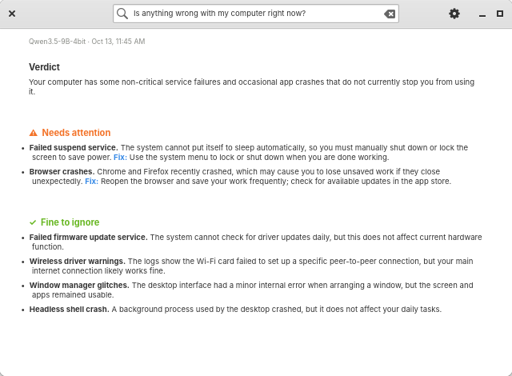
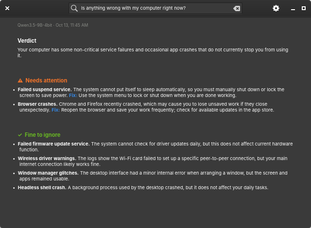
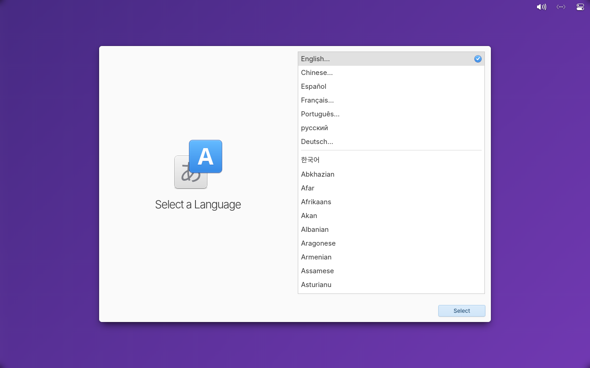

What the installed elementary OS 9 desktop does on a 14-inch MacBook Pro (M1 Pro), checked against the maintained Omarchy Apple Silicon packages (omacom/omarchy-mac-pkgs, audited at 222f7a8). This describes the installed system, not the unbuilt factory image. Updated 2026-10-14.
| Enhancement | Status on the M1 Pro | Notes |
|---|---|---|
| Wi-Fi resume recovery | Ported | Resume script has a regression test; live repeated-suspend test from the factory image is still pending. |
| Speaker safety and DSP | Ported on the desktop | speakersafetyd is active; audio output passed. The factory image does not install this path yet. |
| Battery charge limit | Ported | Limit reads 80%; a quick-settings switch toggles it. |
| Ambient keyboard light | Ported | Adjusted 0 to 59/255 at 141 lx; lock, lid and suspend behavior still to be qualified. |
| Early Apple input loading | Ported | initramfs module list; factory-image path not verified. |
| Dock hub, mouse and Ethernet | Working | Dell WD22TB4 verified 2026-10-14. Display through the dock is not available (no DisplayPort tunnelling). |
| Docked lid mode | Running | Locks instead of retrying suspend while a USB4 dock is attached; lid-close with a dock needs a repeat test. |
| Audio watchdog | Installed 2026-10-14 | Restarts PipeWire and WirePlumber if the audio server stops answering, with a restart limit. It runs as a user service; the unit and tests are in the repo. |
| Speaker and headset-mic rules | Installed; apply at next login | Keeps the speaker and headphone outputs open (no pop between sounds) and stops apps preferring the unplugged headset mic. |
| Function-key mode | Differs | Running with media keys first (fnmode=1); upstream uses the kernel default (auto). Awaiting a deliberate choice. |
| Microphone mapping | Not ported | Needs re-homing to elementary's audio session. |
| Hardware video decode | Missing | Needs AVD kernel support, firmware and a VA-API bridge. |
| Touch ID | Blocked upstream | No public Linux code exists. Omarchy lists it as not in its first release and Asahi lists it as to be announced. A watcher reports when that changes. |
The Local Troubleshooter answering "Is anything wrong with my computer right now?" on the M1 Pro (light and dark).


The ARM64 installer boot test in a virtual machine:

See the bug list for what is still broken and the support matrix for evidence.